ดาวน์โหลดโปรแกรมได้ที่ https://src.maxxgadget.com/app/maxxPrinter/
ทำการติดตั้งโปรแกรม
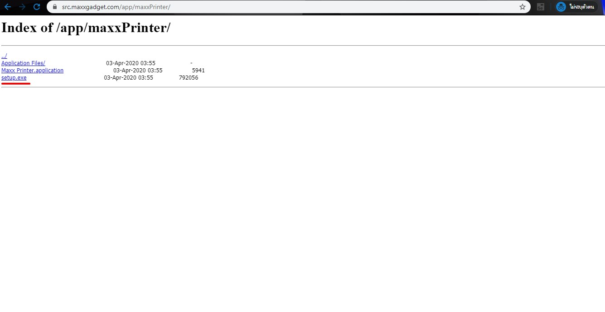
1. ทำการโหลดโปรแกรม โดยที่ไปที่ URL ข้างต้นและกด ตัวที่ขีดเส้นใต้
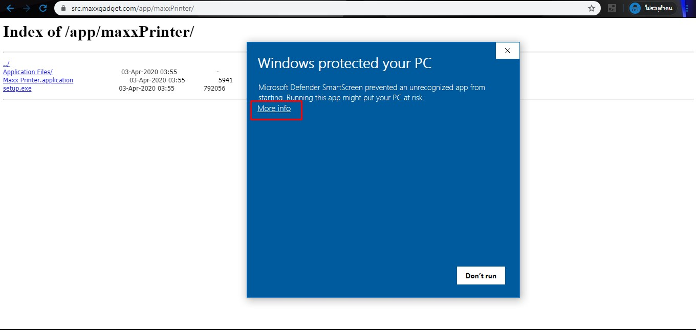
2. ถ้า Windows Protected ขึ้นมา ให้เลือก More Info
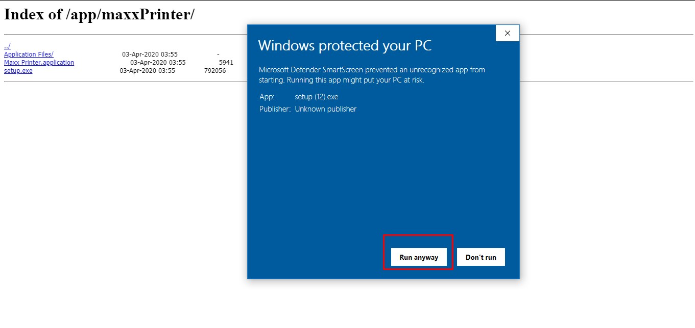
3. จากนั้นให้กด Run anyway
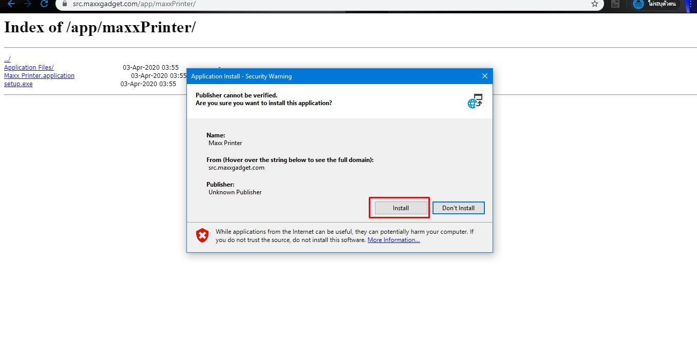
4. จะมายังหน้านี้ ให้กด Install
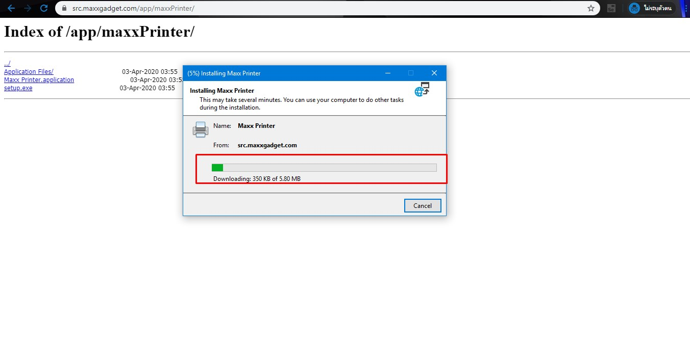
5. รอให้โหลดโปรแกรมเสร็จ
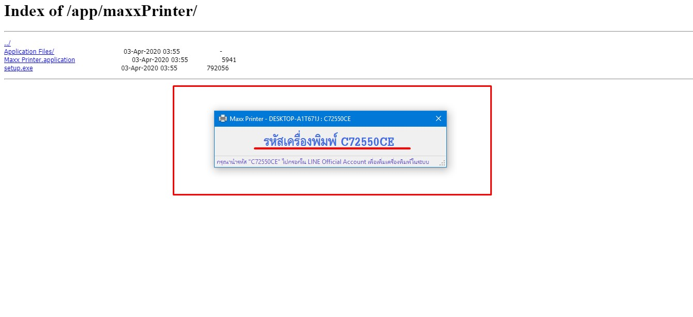
6. เมื่อโหลดโปรแกรมเสร็จจะได้รหัสเครื่องพิมพ์
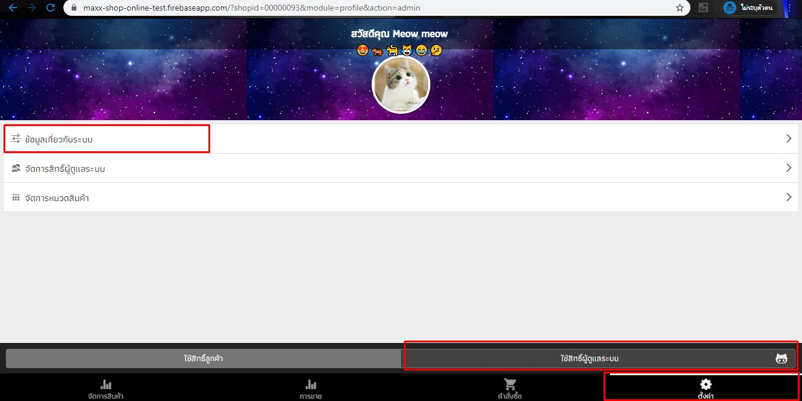
7. เข้ามายังหน้าเว็บแล้วเลือก ใช้สิทธิ์ผู้ดูแลระบบ แล้วไปที่ ตั้งค่า
จากนั้นเลือก ข้อมูลเกี่ยวกับระบบ
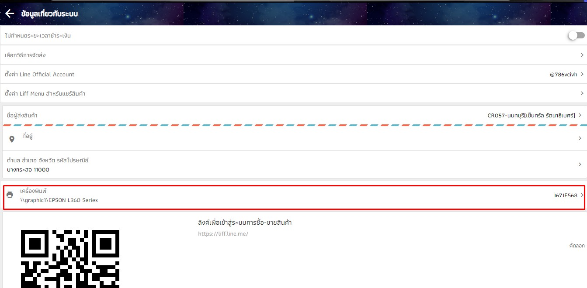
8. ถ้าเคยเซ็ทเครื่องพิมพ์ไปแล้วจะมีตัวเลือกค้างไว้ (ถ้ายังไม่เคยจะไม่ขึ้นอะไร) ให้กดเข้าไปแดง ๆ ที่วงไว้
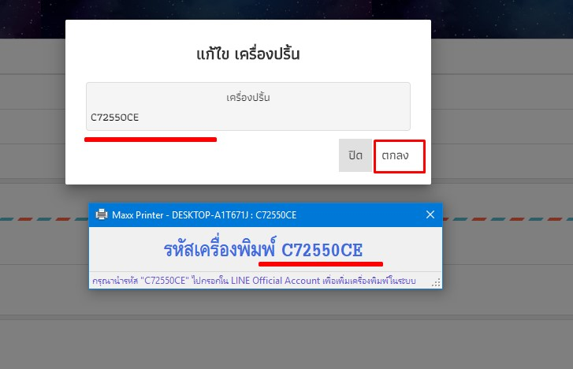
9. ทำการกรอกรหัสให้ตรงกับรหัสเครื่องพิมพ์
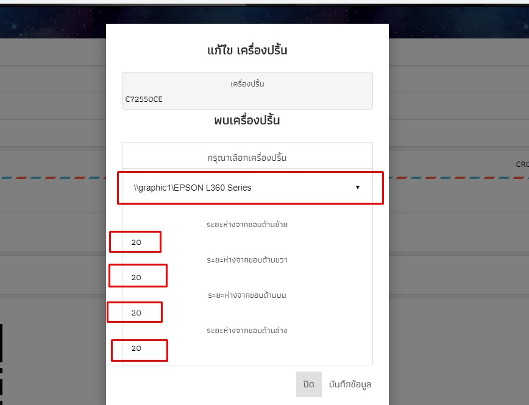
10. ถ้าใส่รหัสถูกจะมายังหน้านี้ ซึ่งจะเห็นว่า สามารถเลือกเครื่องพิมพ์ได้
เลือกระยะห่างจากขอบได้
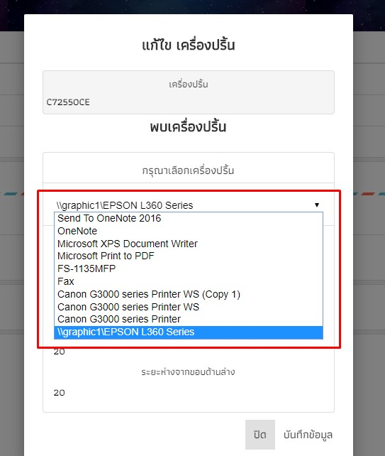
11. เครื่องพิมพ์ที่แสดงในนี้ จะถูกดึงมาจากคอมเครื่องที่ลงโปรแกรม Maxx Printer และสามารถเลือกได้ว่าต้องการให้พิมพ์ออกเครื่องไหน
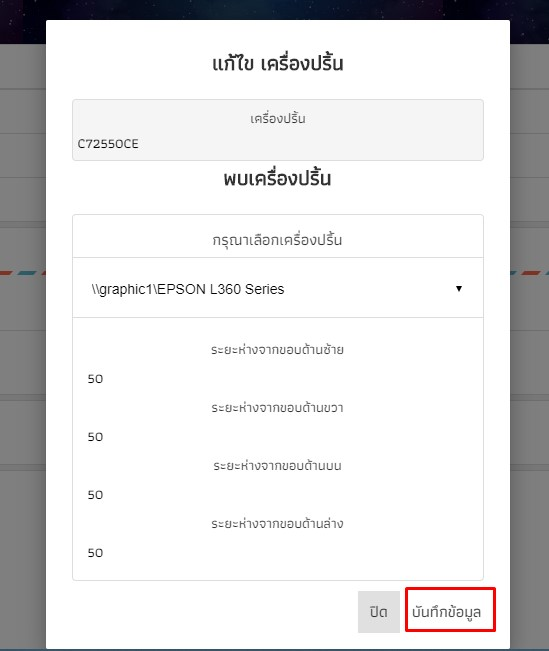
12. เมื่อเลือกเครื่องพิมพ์และระยะขอบเสร็จแล้วให้กด บันทึกข้อมูล เพื่อบันทึกข้อมูลการเลือกเครื่องพิมพ์
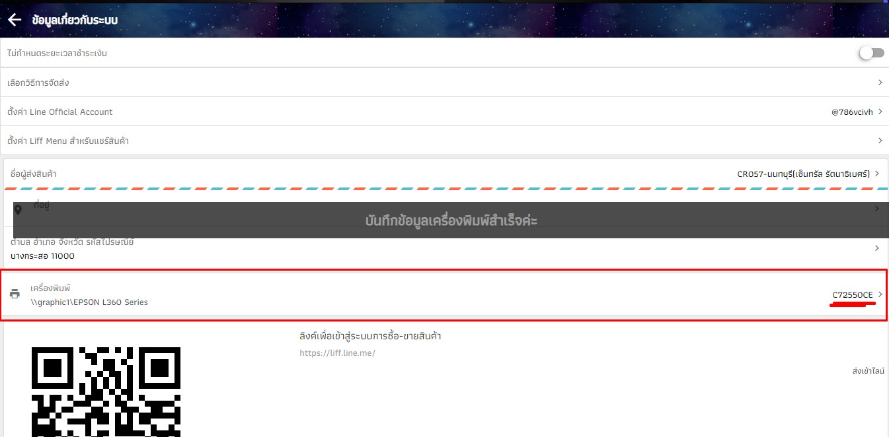
13. รหัสเครื่องพิมพ์จากโปรแกรม Maxx Printer จะเป็นรหัสที่พึ่งพิมพ์เข้าไป
และเครื่องพิมพ์จะกลายเป็นเครื่องพิมพ์ที่พึ่งเลือกไป
*** หลังจากนี้ เมื่อสั่งพิมพ์คำสั่งซื้อ จากรายการคำสั่งซื้อ
จะทำให้โปรแกรมเพิ่มคิวการพิมพ์ลงไปยังเครื่องพิมพ์เครื่องนั้น แล้วก็จะพิมพ์ออกมา
**** แต่กรณีที่คอมที่เปิดโปรแกรม Maxx Printer ปิดอยู่ ระบบจะยังไม่ทำการพิมพ์ออกมา
แต่จะถูกเพิ่มไปยังคิวโปรแกรม
แต่เมื่อเปิดคอมเครื่องที่มี Maxx Printer เครื่องพิมพ์ก็จะพิมพ์คำสั่งซื้อนั้นออกมา